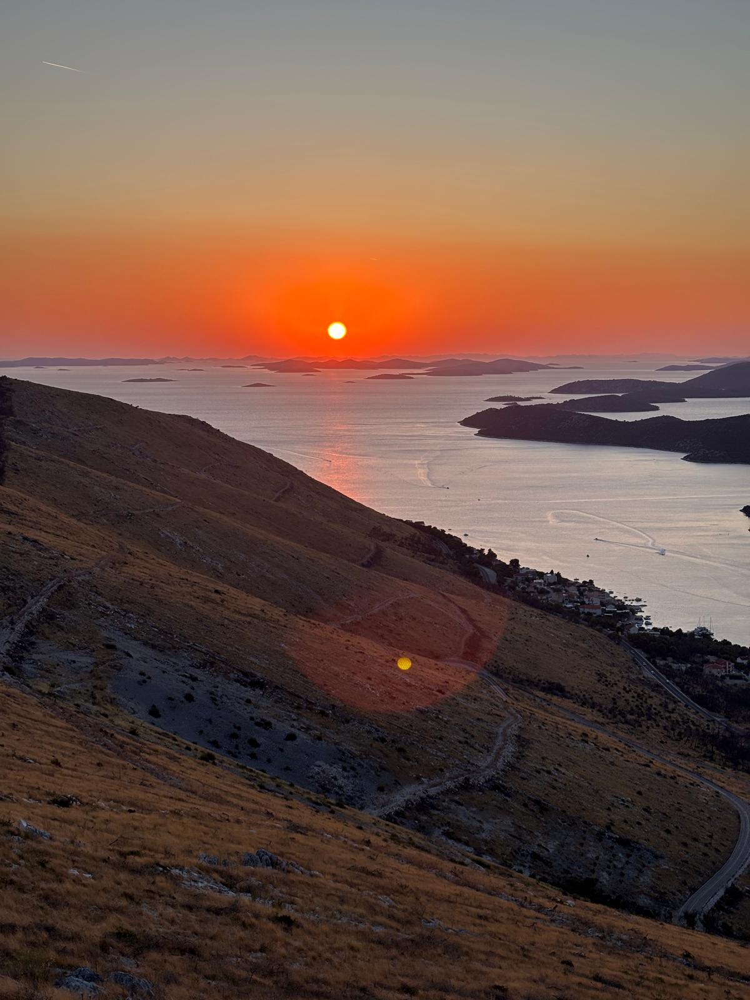

ecomidas.org
Kracht door rede en gezond verstand
Strength through reason and common sense
Сила в разуме и здравом смысле

Over het project · About · О проекте
Sapiomidas is een symbiose van mens en natuur. In zijn ontwikkeling vergat de mens dat hij een kind van de natuur is, en besloot hij ten onrechte dat hij de baas is. Sapiomidas stelt voor mens en natuur te verzoenen — zonder elkaar te veranderen.
Two beginnings, one source — separated to gain form, reunited in purpose.
Два начала, один исток — разделились, чтобы обрести форму, воссоединились в цели.
Concepten · Concepts · Концепции
Rede en geweten als persoonlijk principe van zelfbestuur en wereldbestuur. Geen ideologie — maar een intern kompas dat men kiest.
Reason and conscience as a personal governing principle.
Разум и совесть как личный принцип управления собой и миром.
Een model dat het herstel van de natuur financieel aantrekkelijker maakt dan de vernietiging ervan. Bestaande motieven omgeleid naar regeneratie.
Making ecological restoration more profitable than exploitation.
Восстановление природы — выгоднее её разрушения.
Opstellen · Эссе · Essays
Дискуссии · Discussions
Идеи живут в столкновении с другими идеями. Несогласие приветствуется так же, как согласие.
Контакт · Contact
Вопросы, размышления, предложения о сотрудничестве.
contact@ecomidas.org